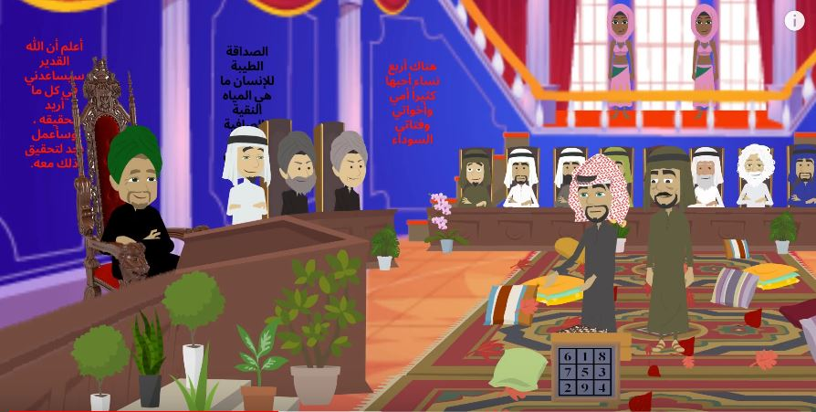
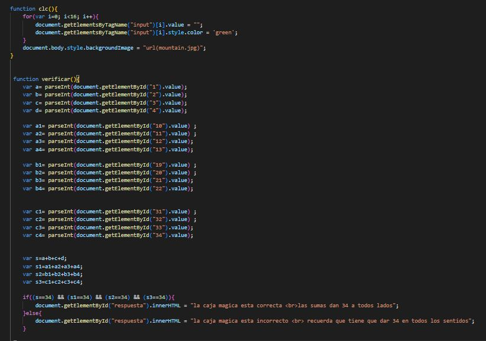

EJERCICIOS DEL HOMBRE QUE CALCULABA Y MAQUINA AL AZAR
EL CUADRO LLENO DE NUMEROS Y EL TABLERO DE AJEDREZ CUADRADOS MAGICOS(resumen)
Después de esta situación, el sirviente que el califa había enviado a buscar al escriba de los poemas de las paredes de su castillo, de nombre Nuredin, al llegar a la casa del escriba se da cuenta que no estaba en
ella pero había encontrado una nota que decía que se había ido hace pocos días para la casa de Barsobia.
Nuredin entró a la casa del escriba y encontró un cuadro mágico con números y un tablero de ajedrez, tomó al cuadro y al tablero y los llevó consigo hasta el palacio del emir y le solicitó al calculista explicar por qué tenían cierto orden los números.
El hombre que calculaba explicó que al ordenar los números del 1 al 9 de una manera particular al sumarlos de los lados su resultado sería, mientras que el tablero
dividido en 64 casillas se trataba de un tablero de ajedrez y empezó a narrar la historia del ajedrez.

El calculista inicia el relato sobre la historia del ajedrez de la siguiente manera: en la India había un rey de nombre Cadova, quien sostuvo una fuerte guerra con el príncipe Calina. Lamentablemente, durante el periodo de la guerra, muere el hijo
del rey, llamado Adjamir, esto puso al rey muy triste y lo llevo a niveles de depresión altísimos. Debido a la triste y nostalgia del rey, no lograba olvidar las estrategias militares empleadas por su ejército, se la pasaba horas y horas repasándolas y
trazándolas en una caja de arena y al culminarlas, las borraba y volvía a empezar nuevamente. Para cada uno de los componentes de su ejército tenía un signo distinto.
Uno de los brabam angustiado de observar en el estado depresivo que se encontraba el rey decidió inventar algo para mantener entretenido al rey y lo hiciera sobreponerse a la terrible tragedia que le había pasado a su hijo. Un día se presentó ante el
rey con un cuadrado seccionado en 64 casillas, intercalando en este cuadrado una casilla de color negra y una de color blanco., y así sucesivamente hasta llenar todo el cuadrado.
El joven brabam le explica las reglas del juego al rey y le indica el significado de cada una de las piezas, el rey comienza a estudiar el maravilloso juego y en poco tiempo logro entender el juego. En agradecimiento con el joven brabam, lo nombra primer Visir.
Una vez el calculista termina de relatar la historia sobre el origen del ajedrez, el emir muy impresionado con el relato da la orden de escribirlo en hojas de algodón con letras de oro, toda la historia relatada con su amigo el hombre que calculaba.
codigo javascript

CUADRADOS MAGICOS
ponga numeros del 1 al 15 que sumados en filas y columnas de 34